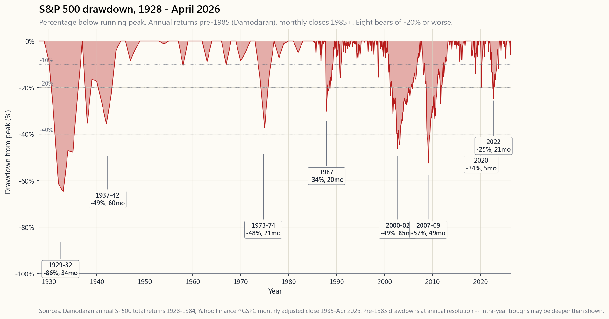
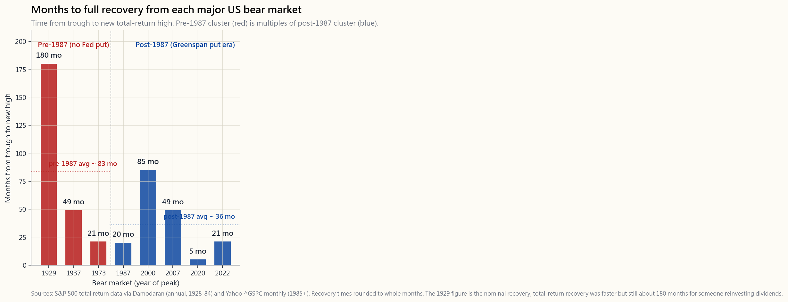

Side Lesson 16: A Hundred Years of Market History — What Every Bear Taught Us
1. Why This Is Important
The S&P 500 has had eight bear markets of twenty per cent or worse since 1928, and every single one has been permanently recovered, in US dollars, on a total-return basis. That is the single most important sentence in this entire tutorial — and also the single most misleading, because every word of it is doing work that an investor in the middle of the next bear market will not feel.
Four reasons this side lesson exists rather than being a footnote on the regime-change theme:

2. What You Need to Know
2.1 The Eight Bears, in One Sentence Each
A long-horizon investor needs to be able to recite these from memory. Each one is a different kind of stress test, and the four-tranche portfolio is supposed to handle each one differently.
- 1929-1932 (-86%, fifteen years to break-even nominal, twenty-five years total return). Margin debt, fraudulent banks, no FDIC, no SEC, the Fed tightening into a deflation. The benchmark for "what happens when policy actively makes things worse."
- 1937-1942 (-49%, four years). A premature Fed tightening and a wartime sentiment shock. The forgotten bear, but the one that proves the 1929 lesson — restart the tightening too soon and you get a second leg.
- 1968-1970, 1973-1974 (-48%, two years). The first oil shock, the end of Bretton Woods, and the early innings of the inflation regime that would not break until 1981. Both stocks and long bonds lost in real terms — the inflation playbook (which we covered in side 06).
- 1987 (-34% peak-to-trough, -22.6% in a single day, twenty months to full recovery). Portfolio insurance feedback loop, with no fundamental damage to the real economy. The first crash where the Fed responded immediately (Greenspan, two months into his chair, flooded liquidity overnight). The blueprint for everything that came after.
- 2000-2002 (-49%, seven years). The dot-com bubble unwinding plus the 2001 recession plus 9/11. The slow grinding bear — twenty-eight months from peak to trough. The lesson is that not every bear is a sharp event; some are erosion.
- 2007-2009 (-57%, four years). The mortgage-credit crisis, Lehman, the worst since 1929. Tested the Fed's modern playbook at scale and it (mostly) held. ZIRP, QE, TARP — the entire post-2008 monetary regime is a response to this bear.
- 2020 (-34% in twenty-three trading days, five months to recovery — the fastest crash and the fastest recovery on record). COVID, March 2020. The shape was unlike any prior bear: vertical down, vertical up, no consolidation. The policy response (Fed cuts to zero in two weeks, fiscal stimulus larger than 2008) defined the recovery speed.
- 2022 (-25%, twenty-one months). The Fed shock — the fastest hiking cycle in forty years to break the post-COVID inflation. The first bear since 1973 to hit both stocks and long bonds together. 60/40 had its worst real-return year on record. Reminded a generation of investors that the negative stock-bond correlation they had grown up with was a feature of the post-2000 regime, not a law of physics.
2.2 Recovery Time Is the Variable That Matters
For an investor with a thirty-year horizon, the depth of a bear market is psychologically painful but financially trivial — a fifty per cent drawdown that recovers in four years is a rounding error in the compound-curve math. For an investor with a three-year horizon, the same fifty per cent drawdown is a retirement-deferring catastrophe.
The number to memorise is recovery time — how many months from the bottom it took to retake the prior peak on a total-return basis. The chart in side16_recovery_times plots this for every major US bear since 1929:
- 1929: ~180 months (fifteen years to recover nominally; the total-return recovery was faster but still took about a decade for someone holding through the dividend reinvestment).
- 1937: 49 months.
- 1973-74: 21 months.
- 1987: 20 months.
- 2000-02: 85 months — the longest of the modern era. The dot-com peak was not retaken until October 2007, and then only briefly.
- 2007-09: 49 months (49 months from the March 2009 bottom to the new high in March 2013).
- 2020: 5 months — the fastest recovery in the history of the index. This is an outlier that may not repeat.
- 2022: 21 months (peak January 2022, new high January 2024).
The investing implication is uncomfortable: a young investor's equity allocation is implicitly a bet on the continuation of the Fed put. If that put ever fails — say, because inflation prevents the Fed from easing into the next bear — recovery times revert to their pre-1987 distribution and the standard "stocks for the long run" math takes a substantial haircut. The framing is simple: regimes change; the modern playbook is a regime, not an axiom.

2.3 What Ended Each Bear (and What Did Not)
A pattern across the eight bears: the thing that triggered the bear is almost never the thing that ended it.
- 1929 was triggered by margin-debt unwinding and ended by fiscal-monetary regime change (Roosevelt, the dollar devaluation in 1933, FDIC, the 1934 Banking Act). Not by stocks getting cheap.
- 1973-74 was triggered by the OPEC oil shock and ended by Volcker's rate hikes in 1981 — eight years later. Stocks bottomed in October 1974, but the inflation regime that the bear was a symptom of did not break until Volcker.
- 1987 was triggered by portfolio insurance and ended in a single Fed liquidity injection forty-eight hours later. Maybe the cleanest cause-and-effect in the dataset.
- 2000-02 was triggered by the dot-com unwinding and ended only when the Fed cut rates aggressively and the housing-credit cycle gave the economy its next leg of borrowing-driven growth (which then triggered 2008).
- 2007-09 was triggered by mortgage-credit failure and ended by ZIRP plus QE plus TARP — a policy response on the order of the 1933 New Deal, executed in nine months.
- 2020 was triggered by COVID and ended within weeks by the Fed cutting to zero, the Treasury sending cheques, and Congress passing fiscal support of approximately twelve per cent of GDP. The fundamental risk (the virus) was not solved; the policy backstop made it irrelevant for the market.
- 2022 was triggered by the Fed (hiking) and ended when the market priced in that the hiking cycle would peak at a known level. The bear ended before inflation came down, which is a tell — markets price the second derivative, not the level.
2.4 What an Investor Should Have Done
The honest answer for almost every bear is nothing. Or more precisely: continue dollar-cost-averaging, do not sell, do not lever up, and rebalance opportunistically when the drawdown crosses obvious psychological thresholds (-20%, -30%, -40%).
The historical record:
- An investor who did nothing through every one of the eight bears, on a 100% S&P 500 portfolio with reinvested dividends, compounded at approximately 9.6% per year nominal from 1928 through April 2026.
- An investor who tried to time the bears — selling on the way down, waiting for the bottom — compounded at substantially less, with the gap concentrated in missing the recovery weeks. JP Morgan's analysis of the 1990-Q1 2024 window shows that missing just the ten best days of the entire window cuts the annualised return roughly in half. Six of those ten best days occurred within fifteen trading days of the worst ten days. You cannot have one without the other.
- An investor with the four-tranche portfolio compounded slightly less than 100% S&P (call it 7-8% nominal) but with peak-to-trough drawdowns of roughly half — the trade is intentional. The growth tranche owns the bear; the SoV and income tranches absorb it; the opportunistic tranche redeploys cash into the bear at the -30% mark. None of this requires forecasting.
side16_history_explorer — lets you click on any of the ten major eras and see depth, duration, recovery, trigger, ending policy, and the textbook "what to do" for each. Use it as a memory aid rather than a tool.
3. Common Misconceptions
4. Q&A
Q: What is the single most useful chart in this lesson? A: The drawdown chart at the top. Print it, tape it to your screen. Every time the market is down ten per cent and you feel scared, look at the chart and locate where ten per cent fits in the historical distribution. Ten per cent happens roughly once a year on the S&P. Twenty per cent every three to five. Forty per cent every fifteen or so. Calibrate.
Q: How long should I expect a bear market to last? A: The post-1987 modern average is about fourteen months from peak to trough and another ten to twenty months for full recovery — call it two to three years total. For a thirty-year-horizon investor that is a rounding error; for a two-year-horizon investor it is the entire game. Map your horizon to your equity allocation accordingly.
Q: Is the 2020 recovery a fluke? A: Probably yes. The combination of a non-financial trigger (a virus), a Fed cutting to zero in two weeks, and fiscal stimulus of twelve per cent of GDP is unlikely to repeat at the same speed. Treat 2020 as a single data point, not as the new average.
Q: Why did 2022 feel worse than the numbers say? A: Because for the first time in twenty years, the bond sleeve fell with the equity sleeve. A 60/40 investor who was used to losing 20% in a stock-only bear was looking at -17% on the whole portfolio. The aggregate drawdown was modest by historical standards, but it broke the diversification assumption that the post-2000 generation had built around.
Q: Should I increase my cash allocation as I get older? A: Yes — but not because cash is a good asset. Cash is a guaranteed real-loss asset. You hold cash because cash is the only thing that does not draw down in a bear, which means it is the only thing you can spend in the first two years of retirement without selling at a loss. The barbell logic, applied to retirement.
Q: What about Japan? A: The Nikkei peaked at 38,915 in December 1989 and did not retake that level until February 2024 — a thirty-five-year recovery. Japan is the live counterexample to "stocks always recover" and it is the reason the investable-universe argument for US equities is so narrow. Investing only in your home country is a survivorship bet; investing in the US (which itself is a survivorship bet, just one with a longer track record) is the framework's compromise.
Q: How do I know I'm not living through Japan rather than 2008? A: You don't. The signal that flipped Japan from recoverable to thirty-five-year-stuck was the combination of a banking crisis that was not resolved promptly (zombie banks left functioning into the late 1990s), a demographic decline, and a deflationary regime. The US has none of those features as of April 2026, but absence of the symptom is not absence of the risk. Watch the resolution speed of the next banking crisis; that is the early signal.
Q: Is dollar-cost-averaging through a bear actually optimal? A: It is not theoretically optimal — perfect bottom-timing would beat it. It is practically optimal because dollar-cost-averaging is the only strategy that stays mechanically engaged when sentiment makes you want to capitulate. The behavioural premium of "having a rule that overrides your panic" is the entire reason DCA exists. Side lesson 5 covers this in depth.
Q: What if I can short or hedge? A: Then you have access to a risk-management toolkit that the median investor does not. Tail-hedging strategies (week 47), put protection (week 27), or trend-following overlays (week 51) all work, in the sense that they reduce maximum drawdown by ten to twenty percentage points across the historical bears. They also cost you fifty to two hundred basis points per year in good times. The trade is fee-for-shape. Worth it for a sleeve, not for the whole portfolio.
Q: What's the minimum cash buffer I need to survive a bear without selling stocks? A: For an accumulating investor still earning income, three to six months' expenses. For a decumulating retiree, two years' expenses minimum, ideally three. The math: the post-1987 average bear takes about fourteen months peak-to-trough; you want enough cash to cover you through the entire drawdown plus a margin so you are not forced to sell at the bottom. A two-year cash bucket is the standard answer.
Q: How do I emotionally prepare for the next bear? A: Write down, now, in cash, what your portfolio will be worth at -25%, -40%, and -55% from current levels. Read those numbers out loud. Sit with the discomfort. Your future self in the bear will have a much easier time staying invested if your present self has already mentally mapped the drawdown. This is not optimisation; it is emotional capital allocation. The "irrational longer than solvent" rule is about other people; this Q&A is about you.
Q: What does the "always recovers" argument actually rest on? A: Three things. First, US dominance of global capital markets in the post-1944 (Bretton Woods) period — capital flows toward the deepest market, which means the dollar reserve status feeds itself. Second, demographic and productivity trends that have been favourable to the US through this entire window. Third, an institutional culture (FDIC, SEC, Fed put) that responds to crises with policy backstops. If any of these three change materially, the recovery distribution changes with them. Regime change is the warning; the US-only allocation is the bet.
番外課 16：百年市場歷史——每次熊市教曉我們的事
1. 為何這一課如此重要
標準普爾500指數自1928年以來，共經歷八次跌幅達兩成或以上的熊市，每一次均已永久收復失地——以美元計，按總回報基準計算。這是本教程中最重要的一句話——同時也是最具誤導性的一句，因為當中每個字所發揮的作用，身處下一次熊市的投資者是感受不到的。
這堂番外課之所以獨立成篇，而非附在市場周期主題的腳注，有以下四個原因：
2. 你需要掌握的內容
2.1 八大熊市，各用一句話概括
長線投資者應能將這些事件倒背如流。每一次都是不同類型的壓力測試，而四分倉投資組合應對每一次的方式各有不同。
- 1929至1932年（-86%，名義上需十五年回到平衡點，總回報計需二十五年）。保證金債務、銀行欺詐、無存款保障計劃、無證券交易委員會，美聯儲在通縮時期仍收緊政策。這是「政策主動惡化後果如何」的基準。
- 1937至1942年（-49%，歷時四年）。美聯儲過早收緊及戰時情緒衝擊。這是被遺忘的熊市，但它恰恰印證了1929年的教訓——過早重啟收緊政策，便會迎來第二波下跌。
- 1968至1970年、1973至1974年（-48%，歷時兩年）。第一次石油危機、布雷頓森林體系終結，以及將延續至1981年的通脹週期序幕。股票與長期債券均錄得實質虧損——正是我們在番外課06所探討的通脹應對策略。
- 1987年（峰谷跌幅-34%，單日跌幅-22.6%，二十個月全面收復）。投資組合保險的回饋迴路所致，並未對實體經濟造成根本損傷。時任主席格林斯潘上任僅兩個月，即連夜向市場注入流動性——此為美聯儲首次立即回應崩盤事件，成為日後所有應對措施的藍本。
- 2000至2002年（-49%，歷時七年）。科網泡沫爆破、2001年經濟衰退，加上9/11事件。緩慢磨蝕型熊市——從峰值至谷底歷時二十八個月。教訓是：並非每次熊市都是突發事件；有些是持續侵蝕。
- 2007至2009年（-57%，歷時四年）。按揭信貸危機、雷曼兄弟倒閉，為1929年以來最嚴峻的熊市。全面考驗了美聯儲的現代應對機制，結果（大體上）奏效。零利率政策、量化寬鬆、問題資產救助計劃——2008年後整套貨幣政策體系，正是對這次熊市的回應。
- 2020年（二十三個交易日內跌-34%，五個月後收復——史上最急跌同時也是史上最快收復）。COVID疫情，2020年3月。形態有別於以往任何一次熊市：垂直下跌，垂直反彈，毫無整固。政策回應（美聯儲兩週內減息至零、財政刺激規模超過2008年）主導了反彈速度。
- 2022年（-25%，歷時二十一個月）。美聯儲衝擊——四十年來最急進的加息週期，以打壓疫後通脹。自1973年以來首次股票與長期債券同步受挫的熊市。60/40投資組合錄得史上最差實質回報年。令整整一代投資者意識到：他們所熟悉的股債負相關性，是2000年後特定市場週期的產物，而非自然規律。
2.2 復甦時間才是真正重要的變數
對於投資期長達三十年的投資者而言，熊市的跌幅在心理上固然痛苦，但在財務上微不足道——一次跌幅五成、四年內收復的熊市，在複利曲線的數學計算中不過是微小誤差。但對投資期只有三年的投資者而言，同樣的五成跌幅，足以令退休計劃推遲。
需要牢記的關鍵數字是復甦時間——從谷底重返前期峰值所需的月數（以總回報計）。side16_recovery_times圖表呈現了自1929年以來每次美國重大熊市的這一數據：
- 1929年：約180個月（名義上需十五年收復；以股息再投資計算的總回報收復較快，但仍需約十年）。
- 1937年：49個月。
- 1973至74年：21個月。
- 1987年：20個月。
- 2000至02年：85個月——現代時期最長。科網峰值直至2007年10月才重新觸及，且僅屬短暫。
- 2007至09年：49個月（從2009年3月谷底至2013年3月創出新高）。
- 2020年：5個月——史上最快收復，屬離群值，未必能重演。
- 2022年：21個月（2022年1月見頂，2024年1月創出新高）。
這對投資的啟示令人不安：年輕投資者的股票配置，隱含着對美聯儲護盤機制延續的押注。一旦該機制失效——例如因通脹阻礙美聯儲在下次熊市中寬鬆——復甦時間將回歸1987年前的分佈，「長期持股」的常規數學假設便需大幅調整。框架很簡單：市場周期會變；現代應對模式是一種周期，而非公理。
2.3 是什麼終結了每次熊市（以及什麼沒有）
縱觀八次熊市，有一個規律：觸發熊市的因素，幾乎從來不是終結熊市的因素。
- 1929年由保證金債務平倉觸發，由財政貨幣制度變革終結（羅斯福、1933年美元貶值、存款保障計劃、1934年《銀行法》）。並非因為股票變得便宜而終結。
- 1973至74年由歐佩克石油衝擊觸發，由沃爾克1981年的加息終結——整整八年之後。股市於1974年10月見底，但熊市所代表的通脹週期，直至沃爾克才得以打破。
- 1987年由投資組合保險觸發，在四十八小時內透過美聯儲單次流動性注入終結。或許是整個數據集中因果關係最清晰的一次。
- 2000至02年由科網泡沫破裂觸發，待美聯儲積極減息且房地產信貸週期為經濟提供下一輪借貸驅動增長後才告終結（而後者又埋下了2008年的種子）。
- 2007至09年由按揭信貸崩潰觸發，由零利率政策加量化寬鬆加問題資產救助計劃終結——規模堪比1933年羅斯福新政的政策回應，在九個月內執行完畢。
- 2020年由COVID觸發，數週內因美聯儲降息至零、財政部直接派發支票，以及國會通過相當於本地生產總值約十二個百分點的財政支持而終結。根本風險（病毒）並未解除；政策托底令其對市場而言無關痛癢。
- 2022年由美聯儲主動觸發（加息），當市場消化加息週期將見頂於某一已知水平時終結。熊市在通脹回落之前便已結束，這是一個信號——市場定價的是二階導數，而非絕對水平。
2.4 投資者應該怎麼做
幾乎所有熊市的誠實答案都是什麼都不要做。或更準確地說：繼續平均成本法買入，不要拋售，不要加槓桿，並在回撤跨越明顯心理關口（-20%、-30%、-40%）時機動進行再平衡。
歷史紀錄如下：
- 一名在每一次熊市中什麼都不做的投資者，持有100%標準普爾500指數股票並再投資股息，自1928年至2026年4月，名義年化複利約為9.6%。
- 嘗試把握熊市時機的投資者——下跌時出貨，等待底部——複利回報則遠遜，差距主要集中在錯過反彈週的損失上。摩根大通對1990年至2024年第一季的分析顯示，在整個時間窗口內僅錯過表現最佳的十個交易日，年化回報約折半。而表現最佳的十個交易日中，有六個出現在表現最差的十個交易日前後十五個交易日內。兩者不可分割。
- 採用四分倉投資組合的投資者，複利回報略低於100%標準普爾500（大約為名義7至8%），但峰谷回撤約縮減一半——這是有意為之的取捨。增長倉承擔熊市衝擊；價值儲存倉與收益倉吸收衝擊；機動操作倉則在跌幅達-30%時，將現金重新部署進場。以上均無需預測市場走勢。
side16_history_explorer——讓你點擊任一重大時期，查看跌幅、持續時間、收復情況、觸發因素、終結政策，以及教科書式的「應對方法」。請將其作為記憶輔助工具，而非操作工具。
3. 常見誤解
4. 問答環節
問：本課最實用的圖表是哪一張？ 答：頂部的回撤圖。打印出來，貼在你的屏幕上。每當市場下跌一成、你感到恐慌時，對照圖表，看看一成跌幅在歷史分佈中處於哪個位置。標準普爾500指數大約每年發生一次一成跌幅，每三至五年發生一次兩成跌幅，每十五年左右發生一次四成跌幅。請以此校準你的預期。
問：我應預期一次熊市持續多久？ 答：1987年後的現代平均數，從峰值至谷底約十四個月，此後再需約十至二十個月全面收復——總計約兩至三年。對投資期三十年的投資者而言，這只是個微小誤差；對投資期兩年的投資者而言，這便是全部。請根據你的投資期相應調整股票配置。
問：2020年的收復是個特例嗎？ 答：很可能是。非金融成因觸發（病毒）、美聯儲在兩週內降息至零，以及規模相當於本地生產總值十二個百分點的財政刺激，這三者結合的速度不大可能重演。請將2020年視為單一數據點，而非新的平均標準。
問：為什麼2022年的感受比數字所呈現的更糟糕？ 答：因為那是二十年來首次，債券倉與股票倉同步下跌。一名習慣於在純股票熊市損失兩成的60/40投資者，眼見整個投資組合下跌-17%。以歷史標準而言，整體回撤並不算嚴峻，但它打破了2000年後一代投資者所建立的分散投資假設。
問：隨著年齡增長，我是否應該增加現金配置？ 答：是——但並非因為現金是好資產。現金是保證錄得實質虧損的資產。持有現金，是因為現金是唯一在熊市中不出現回撤的東西，意味着它是退休初期兩年內，唯一能讓你無需虧本出售股票便可動用的資金。這是槓鈴邏輯，應用於退休規劃。
問：日本的情況呢？ 答：日經指數於1989年12月在38,915點見頂，直至2024年2月才重上該水平——需時三十五年收復。日本是「股市總會收復」論點的現實反例，也是「只投美股」的可投資範圍論點如此狹窄的原因。只投資本國市場，是一種倖存者押注；而投資美國（本身也是一種倖存者押注，只是有更長的歷史記錄支持）是本框架的折衷選擇。
問：我怎麼知道自己不是活在日本版的困局，而非2008年版的復甦？ 答：你不會知道。將日本從可收復轉變為三十五年困局的信號，是銀行危機未能迅速解決（殭屍銀行延續運作至1990年代末）、人口結構下行，以及通縮周期。截至2026年4月，美國並不具備上述特徵，但症狀的缺失並不等於風險的缺失。請留意下一次銀行危機的解決速度；這是早期預警信號。
問：在熊市中實行平均成本法買入，真的是最優策略嗎？ 答：從理論上並非最優——完美把握底部時機的效果更佳。但從實踐角度而言，確是最優，因為平均成本法是唯一一種在情緒促使你投降時仍能維持機械式執行的策略。「擁有一套凌駕恐慌情緒的規則」所帶來的行為溢價，正是平均成本法存在的根本原因。番外課05對此有深入探討。
問：如果我可以做空或對沖呢？ 答：那麼你擁有普通投資者所沒有的風險管理工具箱。尾部風險對沖策略（第47週）、認沽期權保護（第27週），或趨勢跟蹤疊加策略（第51週），在歷史上的各次熊市中均奏效，即最大回撤可降低十至二十個百分點。但在順風時，這些策略每年也會消耗五十至兩百個基點的成本。這是用費用換取形態的取捨。值得為部分倉位採用，但不宜覆蓋整個投資組合。
問：在不被迫賣出股票的前提下，我需要持有多少最低現金緩衝才能撐過熊市？ 答：仍在積累財富且有收入的投資者，三至六個月的支出即可。正在消耗財富的退休人士，最少需要兩年支出，理想為三年。計算邏輯如下：1987年後的平均熊市從峰值至谷底約需十四個月；你需要足夠現金度過整個回撤期，加上緩衝，確保你不會在底部被迫出售。兩年現金緩衝是標準答案。
問：我如何在情緒上為下一次熊市做準備？ 答：現在就寫下，以具體金額計算，你的投資組合在當前水平分別下跌-25%、-40%及-55%後的價值。大聲讀出這些數字。感受那份不安。熊市中的未來自己，會比現在的你更容易堅持不動搖——前提是你的現在已在心理上預演過那段回撤。這不是優化策略，而是情緒資本的配置。「非理性能維持的時間比你的流動性更長」這一規律針對的是別人；這條問答針對的是你自己。
問：「總會收復」的論點究竟基於什麼？ 答：三個條件。第一，1944年布雷頓森林體系確立後美國在全球資本市場的主導地位——資本流向最深廣的市場，意味着美元儲備貨幣地位形成自我強化。第二，在整個時間窗口內對美國有利的人口及生產力趨勢。第三，一套對危機以政策托底作出回應的制度文化（存款保障計劃、證券交易委員會、美聯儲護盤機制）。若上述三者中任何一項發生重大改變，收復分佈亦將隨之改變。市場周期轉變是警示；只投美股是押注。
番外課 16：百年市場歷史——每一次空頭市場教會我們的事
1. 為什麼這堂課很重要
自1928年以來，標普500指數已歷經八次跌幅達20%或更深的空頭市場，而每一次都以美元計算、在總報酬基礎上永久性地收復失地。這是本教程中最重要的一句話——同時也是最容易誤導人的一句話，因為其中每個字都在承擔著投資人身處下一次空頭市場深淵時根本無從感受的重量。
本番外課之所以獨立成篇，而非附在政策情境轉換主題下的腳注，有四個原因：
2. 你需要掌握的知識
2.1 八次空頭市場，每次一句話
長期投資人應能背誦以下內容。每一次空頭市場都是不同類型的壓力測試，而四分倉投資組合的設計，正是為了因應各種不同情境。
- 1929-1932年（-86%，名目價格回到前高需十五年，總報酬基礎需二十五年）。 保證金債務、銀行詐欺、無聯邦存款保險制度（FDIC）、無證管會（SEC），且聯準會在通縮中反向緊縮。這是「政策積極惡化局面時會發生什麼」的標竿案例。
- 1937-1942年（-49%，歷時四年）。 聯準會過早緊縮疊加戰時情緒衝擊。這是被遺忘的空頭市場，卻是驗證1929年教訓的最佳案例——過早重啟緊縮，第二波下跌就會出現。
- 1968-1970年、1973-1974年（-48%，歷時兩年）。 第一次石油危機、布列頓森林體系終結，以及直到1981年才破局的通膨政策情境初期。股票與長期債券雙雙出現實質損失——這正是我們在番外課06所探討的通膨操作手冊。
- 1987年（峰谷回撤-34%，單日-22.6%，二十個月後完全回升）。 投資組合保險的反饋迴路引發，實體經濟並未受到根本性損傷。這是聯準會立即回應的第一次崩盤——葛林斯班甫上任兩個月，隔夜注入流動性。這成為其後所有應對措施的藍圖。
- 2000-2002年（-49%，七年後回到前高）。 網路泡沫破裂，加上2001年經濟衰退及911事件。這是緩慢磨損型的空頭市場——從峰頂到谷底長達二十八個月。教訓在於：並非每次空頭市場都是劇烈事件，有些是蠶食式的侵蝕。
- 2007-2009年（-57%，四年後回到前高）。 房貸信用危機、雷曼兄弟倒閉，是1929年以來最嚴峻的空頭市場。以大規模資金考驗了聯準會的現代操作手冊，並（大體上）撐了過去。零利率政策（ZIRP）、量化寬鬆（QE）、問題資產救助計畫（TARP）——整個後2008年的貨幣政策體制都是對這次空頭市場的回應。
- 2020年（二十三個交易日內-34%，五個月後完全回升——史上最快崩盤，也是史上最快復甦）。 新冠疫情，2020年3月。形態與歷次空頭市場截然不同：垂直下墜，垂直反彈，毫無整理。政策回應（聯準會兩週內降息至零、財政刺激規模大於2008年）決定了復甦速度。
- 2022年（-25%，二十一個月後回到前高）。 聯準會政策衝擊——四十年來最快的升息週期，用以壓制後新冠時代的通膨。這是繼1973年以來首次股票與長期債券同步下跌的空頭市場。60/40投資組合創下史上最差實質報酬年度。提醒了整整一代投資人：股債負相關性是後2000年政策情境的產物，而非物理定律。
2.2 復甦時間才是真正重要的變數
對於投資期限長達三十年的投資人而言，空頭市場的跌幅深度在心理上令人痛苦，但在財務上微不足道——四年內回升的50%回撤，在複利曲線的數學中不過是個捨入誤差。但對於投資期限只剩三年的投資人，同樣的50%回撤，可能是一場推遲退休的災難。
需要記住的數字是復甦時間——從谷底到重返前高，以總報酬計算需要幾個月。side16_recovery_times圖表繪製了1929年以來每次美國主要空頭市場的復甦時間：
- 1929年：約180個月（名目價格約十五年回升；持有並將股利再投入的總報酬復甦較快，但仍花了約十年）。
- 1937年：49個月。
- 1973-74年：21個月。
- 1987年：20個月。
- 2000-02年：85個月——現代史上最長。網路泡沫的高峰直到2007年10月才短暫收復。
- 2007-09年：49個月（從2009年3月谷底到2013年3月創新高）。
- 2020年：5個月——指數史上最快復甦。這是異常值，未必會重演。
- 2022年：21個月（2022年1月達到峰頂，2024年1月創下新高）。
這對投資的啟示令人不安：年輕投資人的股票配置，隱含著對聯準會護盤底線延續的押注。一旦這個底線失效——例如因通膨導致聯準會無法在下一次空頭市場中放鬆貨幣——復甦時間就會回歸1987年前的分布，「長期持股」的標準數學就會大打折扣。框架很簡單：政策情境會改變；現代操作手冊是一種政策情境，不是公理。
2.3 是什麼結束了每一次空頭市場（以及什麼不是）
縱觀八次空頭市場，有一個規律：引發空頭市場的原因，幾乎從來都不是終結它的原因。
- 1929年由保證金債務清算引發，由財政貨幣政策情境的根本性轉變終結（羅斯福新政、1933年美元貶值、聯邦存款保險制度、1934年《銀行法》）。並非因為股票變得夠便宜。
- 1973-74年由OPEC石油危機引發，由伏克爾1981年升息終結——八年後。股票於1974年10月觸底，但作為空頭市場症狀根源的通膨政策情境，直到伏克爾出手才告一段落。
- 1987年由投資組合保險引發，在聯準會四十八小時後注入流動性後終結。這可能是整個數據集中因果關係最清晰的案例。
- 2000-02年由網路泡沫破裂引發，直到聯準會積極降息，且房市信用週期為經濟提供下一輪借貸驅動的成長動能後才告終結（而那個動能隨後引爆了2008年的危機）。
- 2007-09年由房貸信用危機引發，由零利率政策、量化寬鬆、問題資產救助計畫終結——規模堪比1933年新政的政策回應，在九個月內執行完畢。
- 2020年由新冠疫情引發，在聯準會降息至零、財政部直接發放補貼支票、國會通過約當GDP12%規模財政支持後，數週內即告終結。根本風險（病毒）並未解決；政策護盤讓它對市場而言變得無關緊要。
- 2022年由聯準會本身（升息）引發，在市場將升息週期頂點定價後終結。空頭市場在通膨回落之前便已結束——這是一個信號：市場定價的是二階導數，而非水準值。
2.4 投資人應該怎麼做
說穿了，幾乎每一次空頭市場的正確答案都是什麼都不做。或者更精確地說：繼續定期定額投資，不要賣出，不要加槓桿，並在回撤幅度跨越明顯的心理門檻（-20%、-30%、-40%）時，適時進行再平衡。
歷史數據如下：
- 在八次空頭市場中什麼都不做的投資人，以持有100% S&P 500並將股利再投入為基礎，從1928年到2026年4月的年化名目報酬約為9.6%。
- 試圖預判空頭市場的投資人——下跌時賣出、等待底部——年化報酬率顯著更低，差距集中在錯過復甦關鍵交易日上。摩根大通對1990年至2024年第一季的分析顯示，在整個觀測期間只要錯過最好的十個交易日，年化報酬率就會大約腰斬。而那最好的十天中，有六天發生在最差十天的前後十五個交易日以內。兩者如影隨形，無法割捨。
- 採用四分倉投資組合的投資人，年化報酬略低於100% S&P 500（約7-8%名目報酬），但峰谷回撤約為其一半——這個取捨是刻意為之。成長倉承擔空頭市場的衝擊；價值儲存倉與收益倉吸收緩衝；機動部署倉在回撤-30%時將現金重新部署進入空頭市場。這一切都不需要預測未來。
side16_history_explorer——讓你點擊十個主要時代中的任何一個，查看跌幅、持續時間、復甦時間、引發原因、終結政策，以及各時期的「教科書式正確做法」。請將其作為記憶輔助工具，而非分析工具。
3. 常見迷思
4. 問答
問：本課最有參考價值的圖表是哪一張？ 答：頂部的回撤走勢圖。把它印出來，貼在螢幕上。每當市場下跌10%而你感到恐慌時，看一眼這張圖，找到10%在歷史分布中的位置。10%在S&P 500大約每年發生一次。20%大約每三到五年一次。40%大約每十五年一次。重新校準你的感受。
問：我應該預期一次空頭市場會持續多久？ 答：後1987年的現代平均值，從峰頂到谷底約十四個月，完全回升再需十到二十個月——整體算兩到三年。對於三十年投資期限的人，這不過是個捨入誤差；對於兩年期限的人，這就是全部。請根據你的投資期限來調整股票配置比例。
問：2020年的復甦只是僥倖嗎？ 答：很可能是。非金融性觸發因素（病毒）、聯準會兩週內降息至零、GDP約12%規模的財政刺激——這樣的組合不太可能以同樣的速度重演。請將2020年視為單一數據點，而非新的平均值。
問：為什麼2022年的感受比數字顯示的還要糟糕？ 答：因為這是二十年來首次，債券倉與股票倉同步下跌。習慣了在純股票空頭市場損失20%的60/40投資人，這次看到的是整個投資組合虧損17%。以歷史標準衡量，整體回撤並不嚴重，但它打破了後2000年世代圍繞其建立的分散投資假設。
問：隨著年齡增長，我是否應該提高現金配置？ 答：是的——但不是因為現金是好資產。現金是保證實質損失的資產。你持有現金，是因為現金是唯一在空頭市場不發生回撤的東西，意味著它是在退休後最初兩年內唯一能夠動用而不必低價賣出資產的東西。這是槓鈴邏輯應用於退休規劃的體現。
問：日本的情況呢？ 答：日經指數1989年12月達到38,915點的高峰，直到2024年2月才重回那個水位——整整三十五年的復甦期。日本是「股票終將收復失地」論點的活生生反例，也是為何美國股票投資主張如此狹窄的原因。只投資本國市場是一種倖存者押注；投資美國（本身也是一種倖存者押注，只是有更長的成功紀錄）是本課框架的妥協方案。
問：我怎麼知道自己身處的不是日本版情境，而是2008年版情境？ 答：你不知道。讓日本從可回升轉變為三十五年僵局的信號，是銀行危機未能即時解決（殭屍銀行一直存活到1990年代末）、人口結構下滑，以及通縮政策情境三者的結合。截至2026年4月，美國上述三個特徵均不具備，但症狀的缺席並不等同於風險的缺席。請密切觀察下一次銀行危機的解決速度；那是最早期的信號。
問：定期定額投資度過空頭市場，真的是最優選擇嗎？ 答：從理論上說不是——完美的底部時機操作會更優。從實務上說，它是最優選擇，因為定期定額投資是唯一一種在情緒讓你想要認賠殺出時，仍能保持機械式參與的策略。「有一套凌駕你恐慌情緒的規則」所帶來的行為溢酬，正是定期定額投資存在的全部理由。番外課05對此有深入探討。
問：如果我可以放空或避險呢？ 答：那你就擁有一般投資人所沒有的風險管理工具箱。尾部避險策略（第47週）、買權保護（第27週）或趨勢跟隨覆蓋（第51週），都有效果，意味著它們能在歷次歷史空頭市場中將最大回撤降低十到二十個百分點。但它們在多頭年份也會消耗你每年五十到兩百個基點的成本。這個取捨是以費用換取形態調整。適合配置到一個子倉，不適合用於整體投資組合。
問：若不想在空頭市場中被迫賣出股票，我至少需要多少現金緩衝？ 答：對於仍有薪資收入的積累期投資人，三到六個月的生活費。對於已在提領資產的退休人士，至少兩年的生活費，理想上是三年。計算邏輯：後1987年的平均空頭市場從峰頂到谷底約十四個月；你需要足夠的現金撐過整個回撤期再加上一段緩衝，才不會被迫在底部賣出。兩年的現金儲備倉是標準答案。
問：我如何在情感上為下一次空頭市場做準備？ 答：現在就用具體數字寫下，若你的投資組合分別從現在的水位下跌25%、40%、55%，會是多少價值。大聲念出那些數字。讓自己坐在那份不舒適中。當空頭市場真正到來時，你的未來的自己會更容易繼續持有——因為現在的你已經在心理上預演過整個回撤過程。這不是最佳化；這是情感資本的預先配置。「理性持有者比你想像的更有耐力」這條規則是說別人的；這道問答是說你自己的。
問：「終將收復失地」的論點究竟立基於什麼？ 答：三件事。第一，美國在後1944年（布列頓森林體系）時期主導全球資本市場——資本流向最深的市場，這意味著美元儲備貨幣地位形成自我強化的正循環。第二，在這整個時間窗口內，美國人口結構與生產力趨勢一直有利於美國。第三，一套在危機中以政策托底的制度文化（聯邦存款保險制度、證管會、聯準會護盤底線）。這三者若有任何一項出現重大變化，復甦分布就會隨之改變。政策情境改變是警示信號；僅限美國市場的配置是押注。
补充课程16：百年市场历史——每一轮熊市的启示
1. 为什么这一课很重要
自1928年以来，标普500指数经历了八轮跌幅达到或超过20%的熊市，每一轮都在美元计价的总收益基础上实现了永久性复苏。这是本教程中最重要的一句话——同时也是最容易误导人的一句话，因为其中每个词所承载的意义，正处于下一轮熊市中的投资者根本感受不到。
本补充课程之所以单独成篇，而非作为"政策转变"主题的脚注，有四个原因：
2. 核心知识点
2.1 八轮熊市，各用一句话概括
长期投资者应能熟记以下内容。每一轮熊市都是不同类型的压力测试，四仓位投资组合对每一轮的应对方式也各有差异。
- 1929-1932年（-86%，名义回本需十五年，总收益回本需二十五年）。 保证金债务、银行欺诈、无存款保险、无证券监管机构、美联储在通缩中收紧货币。这是"政策主动推波助澜时会发生什么"的基准案例。
- 1937-1942年（-49%，历时四年）。 美联储过早收紧货币，叠加战时情绪冲击。这是被遗忘的熊市，但它证明了1929年的教训——过早重启紧缩，就会迎来第二次下跌。
- 1968-1970年、1973-1974年（-48%，历时两年）。 第一次石油冲击、布雷顿森林体系终结，以及直到1981年才得以打破的通胀周期的初期阶段。股票和长期债券的实际收益均为负值——这正是补充课程06中所讲述的通胀应对策略。
- 1987年（峰值至谷底-34%，单日-22.6%，二十个月完全恢复）。 程序化投资组合保险的反馈回路所致，对实体经济并无根本性损害。这是美联储立即出手干预的第一次（格林斯潘上任仅两个月便连夜注入流动性）。此后所有危机的应对蓝本由此奠定。
- 2000-2002年（-49%，七年）。 互联网泡沫破裂，叠加2001年经济衰退与9/11事件。这是缓慢磨底的熊市——从峰值到谷底历时二十八个月。教训是：并非每轮熊市都是突发事件；有些是持续侵蚀。
- 2007-2009年（-57%，历时四年）。 抵押贷款信用危机、雷曼倒闭，1929年以来最惨烈的一次。大规模检验了美联储的现代应对剧本，并基本经受住了考验。零利率政策、量化宽松、问题资产救助计划——2008年后整个货币政策体系都是对这场熊市的回应。
- 2020年（二十三个交易日内-34%，五个月后恢复——史上最快崩盘，也是史上最快复苏）。 新冠疫情，2020年3月。其形态与以往任何一轮熊市都截然不同：垂直下跌，垂直拉升，没有盘整。政策回应（美联储两周内降息至零，财政刺激规模超过2008年）决定了复苏速度。
- 2022年（-25%，历时二十一个月）。 美联储冲击——四十年来最快的加息周期，旨在遏制新冠疫情后的通胀。这是自1973年以来股票与长期债券同步下跌的第一次熊市。60/40投资组合经历了有史以来实际收益最差的一年。这让整整一代投资者意识到，他们习以为常的股债负相关性，是后2000年政策体系的产物，而非颠扑不破的自然法则。
2.2 恢复时间才是真正重要的变量
对于投资期限长达三十年的投资者而言，熊市的跌幅在心理上令人痛苦，但在财务上微不足道——四年内恢复的50%回撤，在复利曲线的计算中只是一个舍入误差。但对于投资期限仅三年的投资者来说，同样的50%回撤可能导致退休计划被迫推迟。
需要牢记的数字是恢复时间——即从底部算起，重返历史峰值所需的月数（按总收益计算）。side16_recovery_times图表展示了自1929年以来每次美国主要熊市的这一数据：
- 1929年：约180个月（名义价格恢复需十五年；对于坚持再投资股息的投资者而言，总收益恢复更快，但也需要约十年）。
- 1937年：49个月。
- 1973-74年：21个月。
- 1987年：20个月。
- 2000-02年：85个月——现代史上最漫长的恢复期。互联网泡沫的峰值直到2007年10月才被重新触及，且仅为短暂突破。
- 2007-09年：49个月（从2009年3月底部到2013年3月创出新高，历时49个月）。
- 2020年：5个月——指数历史上最快的恢复，属于异常值，未必会重演。
- 2022年：21个月（2022年1月触顶，2024年1月创出新高）。
这对投资的启示令人不安：年轻投资者的股票仓位，隐含着对美联储保底持续运作的押注。若这一保底机制失效——例如因通胀令美联储无法在下一轮熊市中宽松——恢复时间将回归1987年前的分布区间，标准的"长期持有股票"数学就会大打折扣。逻辑很简单：政策体系会改变；现代应对剧本是一种体系，而非公理。
2.3 是什么终结了每一轮熊市（又不是什么）
纵观八轮熊市，有一个规律：引发熊市的因素，几乎从来不是终结它的因素。
- 1929年由保证金债务平仓引发，终结于财政货币政策体系的根本性变革（罗斯福新政、1933年美元贬值、存款保险制度、1934年《银行法》）——而非估值变得便宜。
- 1973-74年由欧佩克石油冲击引发，终结于1981年沃尔克的加息行动——八年之后。股市于1974年10月触底，但导致这轮熊市的通胀体系直到沃尔克时代才真正瓦解。
- 1987年由程序化投资组合保险引发，在美联储四十八小时内注入流动性后终结，或许是这一数据集中因果关系最为清晰的一次。
- 2000-02年由互联网泡沫破裂引发，终结于美联储大幅降息，以及房地产信贷周期为经济注入下一轮信贷驱动增长（这反过来又埋下了2008年危机的种子）。
- 2007-09年由抵押贷款信用崩溃引发，终结于零利率政策、量化宽松与问题资产救助计划——在规模上堪比1933年新政的政策回应，仅用九个月便付诸实施。
- 2020年由新冠疫情引发，在美联储降息至零、财政部直接发放补贴、国会通过约相当于国内生产总值12%规模的财政支持后，数周内便告终结。根本风险（病毒）并未消除；政策兜底令其对市场而言无关紧要。
- 2022年由美联储自身（加息）引发，终结于市场对加息周期将见顶于已知水平的充分定价。这轮熊市在通胀实际下降之前便已结束，这是一个重要信号——市场定价的是二阶导数，而非绝对水平。
2.4 投资者应该怎么做
几乎对每一轮熊市而言，诚实的答案都是什么都不做。或者更准确地说：继续定投，不要抛售，不要加杠杆，当回撤跨越明显的心理阈值（-20%、-30%、-40%）时伺机再平衡。
历史记录显示：
- 在所有八轮熊市中什么都不做、持有100%标普500指数并将股息再投资的投资者，从1928年到2026年4月，名义年化复利约为9.6%。
- 试图择时应对熊市——下跌时卖出、等待底部——的投资者，复利收益率明显更低，差距主要源于错过了恢复期的关键交易日。摩根大通对1990年至2024年第一季度窗口的分析显示，仅仅错过整个窗口内最好的十个交易日，年化收益率便会大约减半。而这十个最好的交易日中，有六个发生在最差的十个交易日的前后十五个交易日内。两者缺一不可。
- 采用四仓位投资组合的投资者，复利收益率略低于100%标普500（名义上约为7-8%），但峰值至谷底的回撤大约只有一半——这是主动选择的权衡。成长仓承受熊市；价值储存仓与收益仓提供缓冲；机会仓在回撤达到-30%时将现金重新部署入市。这一切无需任何预测。
side16_history_explorer——允许你点击任意一个主要历史时期，查看其深度、持续时间、恢复时长、触发因素、终结政策以及教科书式的"应对方案"。将其作为记忆辅助工具，而非分析工具。
3. 常见误解
4. 问答
问：本课中最有参考价值的图表是哪张？ 答：顶部的回撤图。将它打印出来，贴在屏幕旁边。每当市场下跌10%、你感到恐慌时，看看这张图，找出10%在历史分布中处于什么位置。标普500大约每年会出现一次10%的回撤，每三到五年出现一次20%的回撤，每十五年左右出现一次40%的回撤。请据此校准自己的心理预期。
问：熊市通常会持续多久？ 答：1987年后的现代平均水平是，从峰值到谷底约十四个月，完全恢复再需十到二十个月——加在一起大约两到三年。对于投资期限三十年的投资者而言，这只是一个舍入误差；对于投资期限两年的投资者而言，这就是整个游戏。请根据自己的投资期限来配置股票仓位。
问：2020年的复苏是昙花一现吗？ 答：很可能是。新冠疫情是非金融性触发因素、美联储两周内降息至零、再加上相当于国内生产总值12%的财政刺激，三者结合的情况不太可能以同样的速度重演。请将2020年视为单一数据点，而非新的常态基准。
问：为什么2022年的体感比数据所呈现的更糟糕？ 答：因为这是二十年来首次，债券仓位与股票仓位同步下跌。习惯了股票熊市中损失20%的60/40投资者，这次看到的是整个投资组合下跌17%。从历史标准看，总体回撤并不算大，但它打破了后2000年那一代投资者赖以建立的分散投资假设。
问：随着年龄增长，我是否应该增加现金配置？ 答：是的——但不是因为现金是优质资产。现金是保证实际亏损的资产。持有现金，是因为现金是唯一在熊市中不会出现回撤的资产，也是退休初期头两年内你能够花用、而无需低位抛售其他资产的唯一选择。两年现金储备是标准答案。
问：日本呢？ 答：日经指数于1989年12月触及38,915点的峰值，直到2024年2月才重回这一水平——整整三十五年的恢复历程。日本是"股票总会复苏"这一论断的活生生的反例，也正因如此，关于美国股票的可投资市场论才如此局限。仅投资于本国市场是一种幸存者押注；投资于美国市场（本身也是一种幸存者押注，只是历史记录更长）是本框架的折中选择。
问：我怎么知道自己不是身处日本1989年，而非2008年？ 答：你无法知道。日本从"可恢复"转变为"三十五年停滞"的信号，是银行危机未能及时解决（僵尸银行一直运营到1990年代末）、人口持续下降，以及通缩性政策体系三者的叠加。截至2026年4月，美国尚不具备上述任何一个特征，但症状缺失并不等于风险不存在。请密切关注下一次银行危机的化解速度，那才是早期预警信号。
问：定投真的是穿越熊市的最优策略吗？ 答：理论上不是——完美的底部择时会胜过它。但在实践中，它是最优策略，因为定投是唯一一种能在情绪驱使你投降时保持机械执行的策略。"拥有一套凌驾于恐慌之上的规则"所带来的行为溢价，正是定投存在的全部意义。补充课程05对此有深入探讨。
问：如果我可以做空或对冲呢？ 答：那你就拥有了普通投资者所没有的风险管理工具箱。尾部对冲策略（第47周）、看跌期权保护（第27周）或趋势跟踪叠加策略（第51周），从历史数据来看都有效，能将历次主要熊市的最大回撤降低十到二十个百分点。但在市场上涨期，它们也会耗费你每年五十到两百个基点的成本。这是以费用换形态的交易。适合用于某一个仓位，而非整个投资组合。
问：我至少需要多少现金储备，才能在熊市中不被迫卖出股票？ 答：对于仍在积累财富、有收入来源的投资者而言，三到六个月的生活费用。对于正在提取养老金的退休人士，至少需要两年的生活费用，最好是三年。逻辑如下：1987年后的平均熊市从峰值到谷底约需十四个月；你需要足够的现金支撑整个回撤期，并留有余量，以免被迫在底部抛售。两年现金储备是标准答案。
问：如何在心理上为下一轮熊市做好准备？ 答：现在就以现金形式写下，在当前投资组合基础上分别跌25%、40%、55%后，你的投资组合价值会是多少。大声把这些数字念出来。静静感受那种不适。若你的当下自我已经在心理上预演过这场回撤，你的未来自我在熊市中将更容易坚守投资。这不是优化；这是情绪资本的配置。"市场非理性持续的时间往往超过你保持偿付能力的时间"这句话说的是别人；这个问答针对的是你自己。
问："总会复苏"这一论断究竟依赖于什么？ 答：三点。第一，美国在后1944年（布雷顿森林体系确立后）全球资本市场中的主导地位——资本流向最深的市场，这意味着美元储备货币地位会自我强化。第二，在这整个历史窗口内，对美国有利的人口与生产率趋势。第三，一套危机发生时能以政策兜底的制度文化（存款保险制度、证券监管机构、美联储保底）。若这三点中任何一点发生重大改变，复苏的分布规律也将随之改变。政策体系变迁是预警信号；仅投资于美国的资产配置，是一种押注。
第二部分：视频脚本
视频标题： 百年市场历史——十六分钟看懂每一轮熊市与每一次复苏 | 补充课程16
目标时长： 约16分钟
主持人：
- 陳馬（讲师）：资深投资人，亲历1987年、2000年、2008年、2020年及2022年市场。
- 小魚（学员）：风险意识较强的散户投资者，只经历过牛市。
[片头序列]
[VISUAL: 动态Logo "补充课程16——百年市场历史"]
[VISUAL: image/side16_century_drawdowns.png — 全屏展示。]
陳馬： 这就是贯穿整节课的图表。标普500指数回撤——相对于前期峰值的跌幅百分比——从1928年到上个月，每一天的数据。左侧那个最深的谷底是1929年。其余的谷底依次是：1937年、1968年、1973年、1987年、2000年、2007年、2020年、2022年。九十八年间，八轮跌幅超过20%的熊市。
小魚： 而那条线，最终总会回到零。
陳馬： 总是如此。这是整个教程中最重要的一句话——同时也是最容易误导人的一句话，因为线条回到零的速度才是真正关键的变量，而这个速度的差距可以是一个数量级。1929年在总收益基础上用了二十五年。2020年只用了五个月。同样是"复苏"这个词，承载的内容却截然不同。
[第一段：八轮熊市]
[VISUAL: image/side16_century_drawdowns.png，标注每轮熊市。]
陳馬： 我来逐一梳理这八轮熊市。每一轮都是不同类型的压力测试，四仓位投资组合对每一轮的应对方式也各有不同。
小魚： 从最惨烈的开始讲。
陳馬： 1929年。道琼斯指数于9月3日触及381点的峰值，于1932年7月8日跌至41点的谷底。道指跌去89%。当时的标普综合指数跌幅为86%。道指直到1954年11月才重返1929年的高位。整整二十五年。
小魚： 是什么酿成了这场危机？
陳馬： 保证金债务。投资者当时借贷购买股票的比例高达90%。市场一跌，追加保证金的通知滚雪球般涌来，银行纷纷倒闭，存款因为没有存款保险制度而化为乌有，美联储在通缩中收紧货币——这是美联储在历史上最被诟病的错误之一——《斯姆特-霍利关税法》摧毁了国际贸易，整个实体经济随之崩溃。失业率高达25%。
小魚： 好，下一轮呢？
陳馬： 1937年。美联储过早收紧货币，将准备金率翻倍，复苏就此转头，迎来第二次下跌。市场跌去49%，历时四年才恢复。1937年是那轮被遗忘的熊市，之所以被遗忘，是有原因的——2008年的伯南克是读过这张图的。正因为他读过，才在雷曼危机后将利率维持在零长达七年。
[VISUAL: 回撤图，标注1973-74年谷底。]
陳馬： 1973年至1974年。欧佩克将油价提高了四倍，布雷顿森林体系于1971年已经终结，通胀早已蔓延，越战接近尾声，水门事件占据了每个人的电视屏幕。市场跌去48%。恢复看起来很快——回到前期峰值只用了二十一个月——但以实际购买力衡量，直到1992年才真正恢复。在名义上持平的指数背后，是长达十八年的实际负收益。我们在补充课程06中讲通胀时已经覆盖了这部分内容。
小魚： 也就是说，图表掩盖了通胀对购买力的侵蚀。
陳馬： 向来如此。在通胀体系下，名义复苏的数字令人愉悦，却掩盖了真实的损失。
[VISUAL: 回撤图，放大至1987年10月。]
陳馬： 1987年10月。单日下跌22.6%——有史以来最大的单日跌幅百分比。计算机化的程序化投资组合保险是触发因素。市场自动抛售。第二天，格林斯潘——上任才两个月——连夜向系统注入流动性。美联储的贴现窗口以最低利率无限量开放。市场在两个月内触底，二十个月内回到崩盘前的水平。
小魚： 那就是美联储保底的起源。
陳馬： 正是，这是第一次。此后的每一轮危机都有类似的应对，且规模不断扩大。那就是这个政策体系。
[VISUAL: 回撤图，标注互联网泡沫谷底。]
陳馬： 2000年至2002年。互联网泡沫破裂，叠加2001年经济衰退与9/11事件。标普500从峰值到谷底跌去49%，纳斯达克跌去80%。从峰值到谷底历时二十八个月——这是缓慢磨底的熊市。互联网泡沫的峰值直到2007年10月才被短暂触及。这轮熊市告诉我们，并非每轮熊市都是突发事件；有些是持续侵蚀。
小魚： 2008年呢？
陳馬： 2007年至2009年。标普500从峰值到谷底跌去57%。抵押贷款信用危机、雷曼兄弟倒闭、美国国际集团、整个影子银行体系的崩溃。美联储以零利率政策、量化宽松——用新创造的货币购买债券——以及问题资产救助计划应对。这场应对构成了整个后2008年货币政策体系。股市于2009年3月触底，直到2013年3月才重返历史高位——历时四年。
[VISUAL: 回撤图，放大至2020年3月。]
陳馬： 2020年3月。史上最快的崩盘——二十三个交易日内跌去34%。紧接着是史上最快的复苏。从底部到创出新高，只用了五个月。美联储两周内将利率降至零，并首次开始购买公司债——这是前所未有的举措——国会通过了相当于国内生产总值约12%规模的财政刺激。病毒并未消失；是政策回应让它对市场而言变得无关紧要。
小魚： 那2022年呢？
陳馬： 2022年是现代史上最耐人寻味的熊市。标普500跌去25%，历时二十一个月恢复。但——这是很少有人提及的部分——与此同时，长期美国国债跌去31%。投资组合中的债券仓位与股票仓位同步下跌，这是自1970年代以来的第一次。习惯于股票熊市的传统60/40投资者，这次看到的是整个投资组合的损失。美联储当时是在制造熊市，而非阻止它——他们在大幅加息以遏制新冠疫情后的通胀。
[第二段：恢复时间图]
[VISUAL: image/side16_recovery_times.png — 恢复月数柱状图。]
陳馬： 现在看恢复时间图。纵轴是从底部到创出新高所需的月数。1929年的柱状图高出其他所有柱状图三倍。2020年的柱状图最短——在图上几乎看不见。1987年后的数据群集远比1987年前的密集，高度也低得多。
小魚： 为什么？
陳馬： 格林斯潘保底。美联储对严重回撤进行干预的隐性承诺。这一承诺历经格林斯潘、伯南克、耶伦与鲍威尔四任主席，始终得以兑现。这不是自然法则，而是持续了三十八年的政策体系。
小魚： 如果这个体系改变了呢？
陳馬： 那么恢复时间将回归1987年前的分布区间，标准的"长期持有股票"数学就会大打折扣。政策体系会改变——这是贯穿全程的警示。年轻投资者假设年化9%复利的计划，隐含着对美联储保底持续运作的押注。大多数时候，这个押注会得到回报。但有时——1989年后的日本，1929年后的美国——它并不奏效。
[第三段：是什么终结了每一轮熊市]
陳馬： 纵观全部八轮熊市，有一个规律。引发熊市的因素，几乎从来不是终结它的因素。
小魚： 比如？
陳馬： 1929年由保证金债务引发，终结于罗斯福新政、美元贬值、存款保险制度和1934年《证券交易法》——是财政货币政策体系的根本变革。1973年由石油冲击引发，终结于1981年沃尔克打破通胀——八年之后。1987年由程序化投资组合保险引发，终结于一次美联储流动性注入。2008年由抵押贷款危机引发，终结于零利率政策和量化宽松。2020年由病毒引发，终结于美联储降息至零叠加财政刺激。2022年由美联储本身引发，终结于市场对加息周期将见顶的充分定价。
小魚： 所以答案始终是政策。
陳馬： 当政策不再恶化时，熊市就会结束。不是当原因被解决时，不是当估值变得便宜时，不是当市场情绪彻底清洗时。是当政策不再恶化时。这是唯一一个在所有八轮熊市中都奏效的信号。
[第四段：你应该怎么做]
小魚： 那在这些熊市中，投资者应该怎么做？
陳馬： 几乎总是——什么都不做。更具体地说：按计划继续定投，不要抛售，不要加杠杆，当回撤跨越明显的心理阈值时伺机再平衡。
小魚： 这听起来像是在取巧。
陳馬： 它之所以感觉像取巧，是因为做到极其困难。来看摩根大通对1990年至2024年窗口的分析。全程持仓不动的投资者，年化复利约为10%。仅仅错过整个窗口内最好的十个交易日的投资者，复利收益率大约减半。而这十个最好的交易日中，有六个发生在最差的十个交易日的前后十五个交易日内。两者缺一不可。
小魚： 所以试图躲避熊市的代价，是错过复苏。
陳馬： 正是。就在你相信自己已经正确判断出底部的那一刻，你其实已经在底部附近卖出了。复利的算术对于错过关键交易日毫不留情。
[第五段：互动工具]
[VISUAL: 切换至互动面板 interactive/side16_history_explorer.html。]
陳馬： 全部十个主要历史时期都收录在本课底部的互动工具中。点击任意一个时期——1929年、1937年、1968年、1973年、1987年、2000年、2007年、2020年、2022年，或我们当前2026年4月的牛市——你就能看到每个时期的深度、持续时间、恢复时长、触发因素、终结因素，以及投资者应该采取的应对方案。
小魚： 所以这更像是一个记忆辅助工具，而非分析工具。
陳馬： 正是。重点是能够熟记这些内容，以便下一轮熊市来袭、屏幕一片红、身边的人都在恐慌时，你能脱口而出。顶部的图表告诉你，你在历史分布中处于什么位置。互动工具告诉你，对应历史时期的应对剧本是什么。两者都无法告诉你底部在哪里。没有任何方法能做到。
[第六段：日本这个例外]
小魚： 日本呢？
陳馬： 日本是我过去十四分钟所说的一切的活生生的反例。日经指数于1989年12月触及38,915点的峰值。直到2024年2月才重回这一水平。三十五年。一个完整的投资生涯，从峰值到峰值。
小魚： 为什么那套剧本在日本失效了？
陳馬： 三个原因。银行危机未能及时化解——僵尸银行一直苟延残喘到1990年代末。人口持续下降——劳动年龄人口于1995年触顶，此后一路走低。以及通缩性政策体系——日本央行多次过早收紧货币，非常类似于1937年的美联储。三者叠加，就是三十五年的停滞。
小魚： 美国会变成日本吗？
陳馬： 从机制上看，有这种可能。从概率上看，不大——美国目前既没有冻结的银行体系，也没有下降的劳动年龄人口。但"这次不一样"这句话可以双向理解。"仅投资于美国"这一论断，是对美国复苏故事成立所需条件将继续延续的押注，而非保证。理解二者的区别，正是本课的意义所在。
[结语]
[VISUAL: 并排显示回撤图与恢复时间图。]
陳馬： 三个核心结论。
第一：过去百年间，美国每一轮熊市都以美元总收益为基础实现了完全复苏。跌幅各异，持续时间相差一个数量级。但这个规律成立。
第二：复苏速度才是与退休规划真正挂钩的变量。1987年之前，恢复往往需要数年乃至数十年。1987年之后，通常只需数月至两年左右。分水岭是美联储保底——它本身是一种政策体系，而非自然法则。
第三：当政策不再恶化时，熊市就会结束。不是当原因被解决时，不是当估值变得便宜时。请关注政策的二阶导数。
小魚： 那在熊市中，我实际上该做什么？
陳馬： 按计划继续定投。在明显的阈值——跌20%、跌30%、跌40%时——伺机再平衡。备好两年生活费的现金，这样就不必在底部低价出售资产。不要试图抓住底部；没有人能连续做到两次。每当市场下跌10%、你感到恐慌时，看看那张回撤图，提醒自己：10%的回撤大约每年发生一次，20%每三到五年一次，40%每十五年左右一次。你正身处一个已知的分布之中。请据此校准你的预期。
[VISUAL: 结尾卡片"补充课程16——百年市场历史"]
陳馬： 下一节补充课程，我们将转向一个相对平静的主题——共同基金、交易所交易基金与封闭式基金的结构，以及为什么产品的包装形式与投资策略同等重要。我们到时候见。